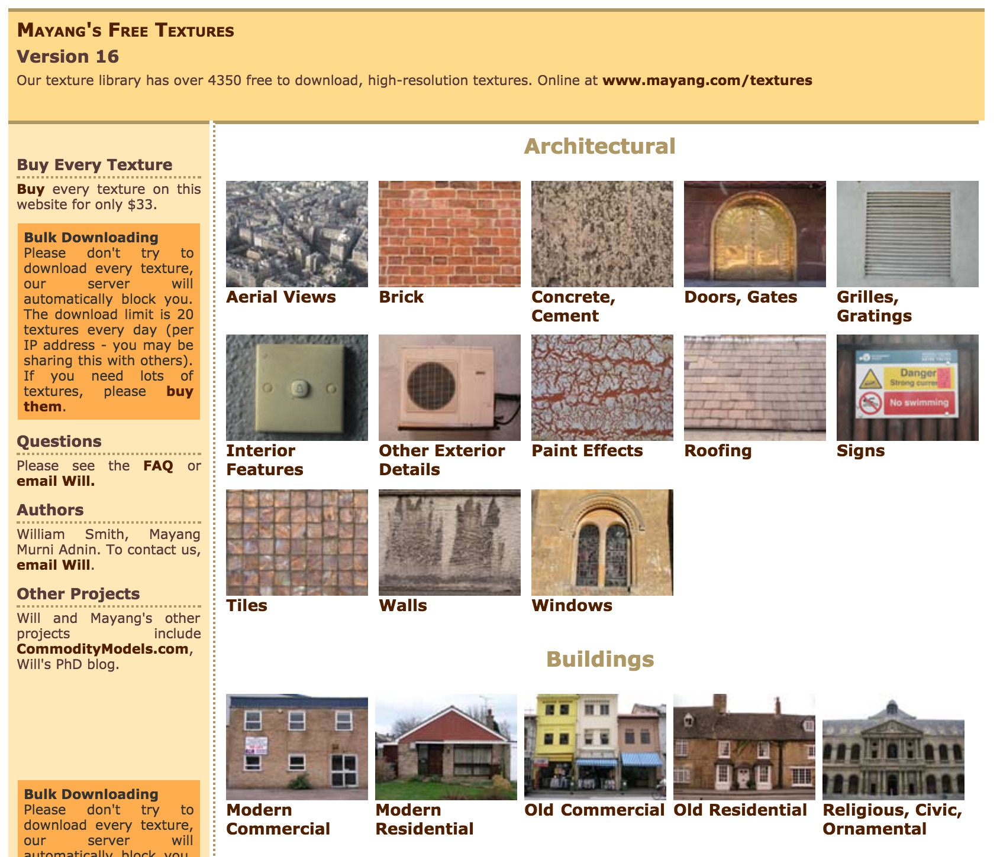

My texture Collection!
Rough
Some things in my apartment have a rough texture

Soft
Other things have a soft texture

Smooth
Finally, some things in my apartment have a texture that is smooth

Textures are everywhere. Some of everywhere is in my apartment!
Welcome to my website, where I have the honor of sharing with you some of my very favorite textures. The textures on this site were all found within my own home, although textures can really be found almost anywhere.
(I just prefer not to leave my home when I am not forced to). Lol haha! Just kidding. But if you don't like leaving your apartment, that is ok. Neither do I.
Some things in my apartment have a rough texture
Other things have a soft texture
Finally, some things in my apartment have a texture that is smooth
I would still consider myself a novice at texture hunting. Here are some textures I'd really like to find someday:
Some of these are pretty crazy textures, but hey! A girl can dream...
Every good hobbyist needs to draw inspiration from a true master. Well, guess what? I have found some.
Please check out this website. It is called "Mayang's Free Textures," and it has over four thousand textures, organized in a very attractive format.
Mayang's Free Textures also has many amazing features, like the ability to purchase textures, look up amazing texture facts in the website's FAQ section, and see the very attractive colors and stylings that Mayang has applied to the website design.
Keep coming back, though! Maybe someday Mayang will be coming here to get some counter-inspiration from me when my textures website reaches its potential for true amazingness.